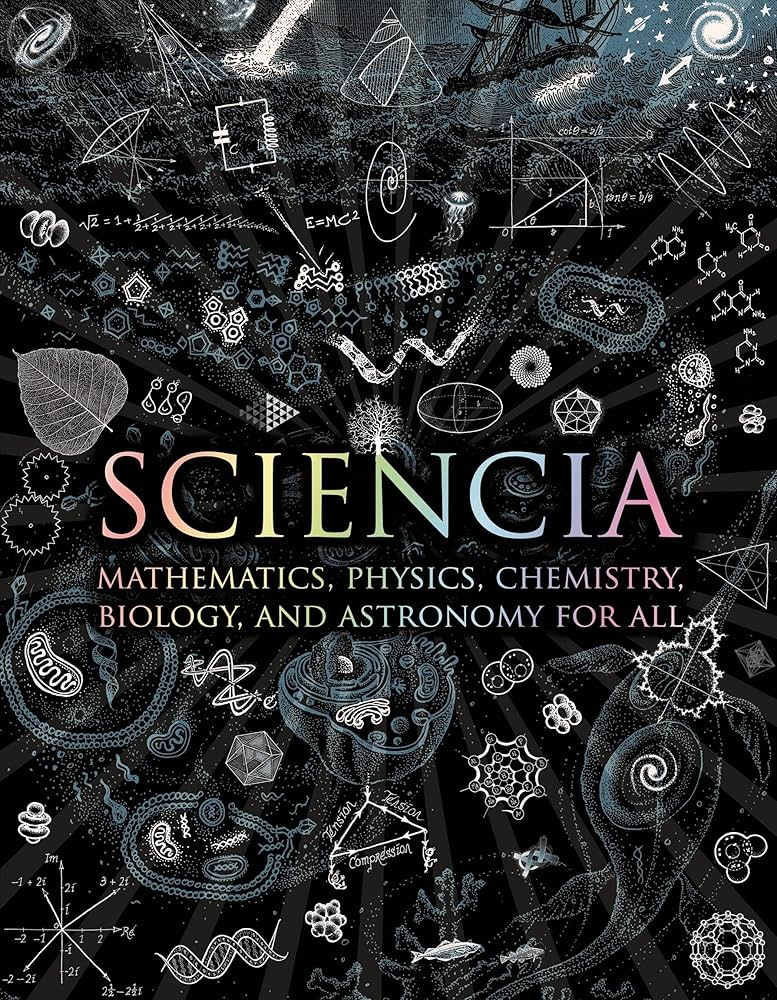

📖《Sciencia》是一本独特的多学科科普合集，一页一个科学小知识，涵盖数学、物理、化学、生物、天文等多个领域。每位作者都是各自领域的专家，以简洁明了的方式呈现科学的核心概念。
这本书的设计非常适合碎片化阅读，每次翻开都能学到新的知识点，是科学爱好者快速浏览科学世界的理想读物。
一页一个科学小知识，翻起来非常有意思。覆盖面广是它最大的优点——从数学定理到物理定律，从化学反应到生物进化，几乎涵盖了自然科学的方方面面。每一页都是独立的主题，随手翻开就能读，配图精美，讲解简洁。
但缺点也很明显：太概括了。很多知识点只是点到为止，无法深入理解背后的原理。作为一个有理工科背景、希望系统学习的读者，这种"蜻蜓点水"式的介绍对我来说不太够。它更像是一本"科学菜单"，让你知道有哪些有趣的领域，但如果想真正"品尝"，还得去找更专业的书籍。不过，它成功地激发了对多个学科的好奇心，这一点是值得肯定的。